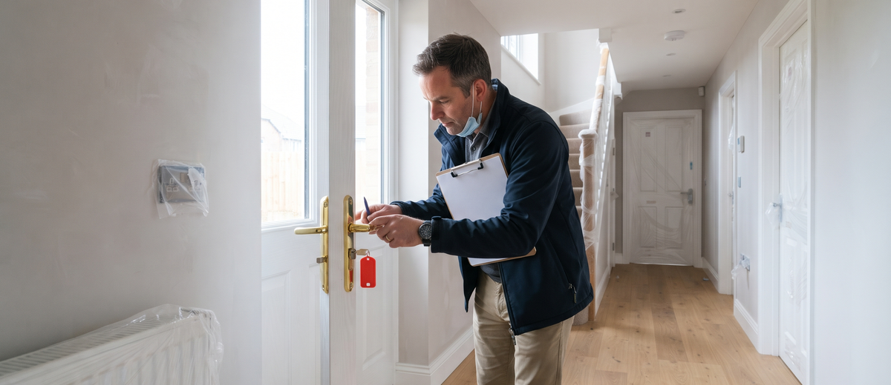

cha-insecuredefaultconfigreporter
The Handover. A command line tool that asks one blunt question of a configuration file: whether two named settings still hold exactly what the maker shipped, the builder's key still in the lock.

The whole checkTwo exact top level comparisons: password equal to password, and admin_password equal to admin
InputOne YAML or JSON configuration file, a required positional argument, loaded as a mapping
Dependenciesjsonschema 4.17.0 or later and PyYAML 6.0 or later
Default foundA warning only: the run exits 0 either way
Usage
python3 main.py CONFIG_FILE [-s SCHEMA] [-t yaml|json] [-l LEVEL]
The entry point is main.py, and the configuration file is a required positional argument on every run. The README's own parameter list omits that argument entirely, and its usage line names an executable the repository does not contain.
| Option | What it does |
|---|---|
CONFIG_FILE | Path to the configuration file in YAML or JSON (required). It must load as a mapping of setting names to values. |
-s, --schema_file | Path to the JSON schema file for validation. Without one, the run warns that validation is skipped. |
-t, --type | yaml or json, for a file whose ending cannot place it. Without it, the type is detected by ending; an unplaceable ending is refused with the words: Could not determine the file type. Please specify with --type. |
-l, --log_level | Log level among DEBUG, INFO, WARNING, ERROR, and CRITICAL. Default: INFO. |
-h | Show help message and exit. |

Stated limits
- The entire default detection is the two exact comparisons at the top level only, run independently, so one file can earn both warnings in a single run. When neither matches, the run logs No default password found.
- No other built in checks ship in the tool: it does not check ports or access controls. A nested password is never seen, a capitalised Password is not matched, and admin123, changeme, and every other factory default in the world pass and produce the no default found line.
- Finding a default is a warning, not a failure, so the run exits 0 either way, and anything gating on this tool's exit code passes a configuration still shipping the factory password.
- The loaded configuration must be a mapping: an empty YAML file, which loads as None, and a JSON file that loads as a list are both refused with a plain message naming what was got instead.
- A missing file, an unparsable file, and a schema validation failure all exit 1.